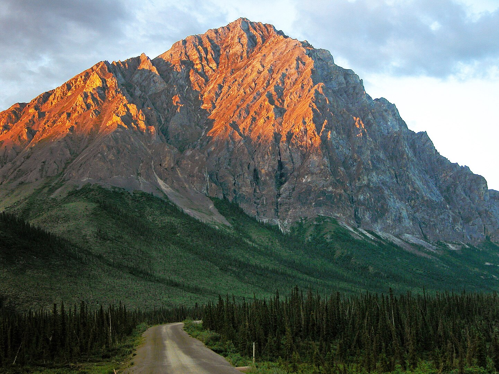

Brooks Range
Fun facts about the Brooks Range!
- The Brooks Range is home to the Gates of the Arctic National Park, which spans over seven million acres of protected land.
- Petroglyph carvings made by prehistoric Inupiat groups can be found on rocks throughout the Brooks Range.
- The Trans-Alaska Pipeline System of oil pipelines cuts directly through the Brooks Range.
- The Brooks Range had a significant decrease in the size of its snowfields from 1985 to 2017, a process that is accelerated by fresh snow from winter melting during the summer months, an irregular process given the elevation of the peaks of the Brooks Range and the extreme northern latitude.
- The Brooks Range marks the northern extent of the boreal forests in Alaska; therefore, despite being above the Arctic Circle, the Brooks Range is habitated by fauna both common throughout the Northern United States and specific to sub-arctic ecologies. These include grizzly bears, moose, caribou, Dall's sheep, beavers, and snowshoe hares.
Gates of the Arctic National Park
,
Petroglyph carvings
,
Snowfields
